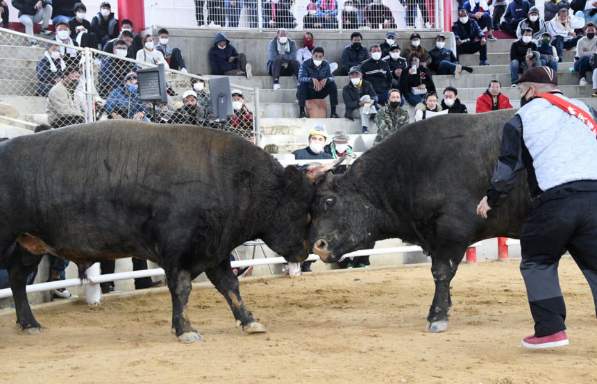
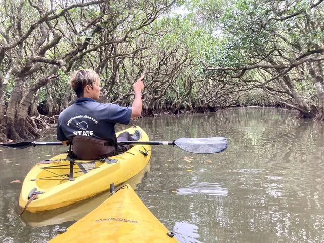
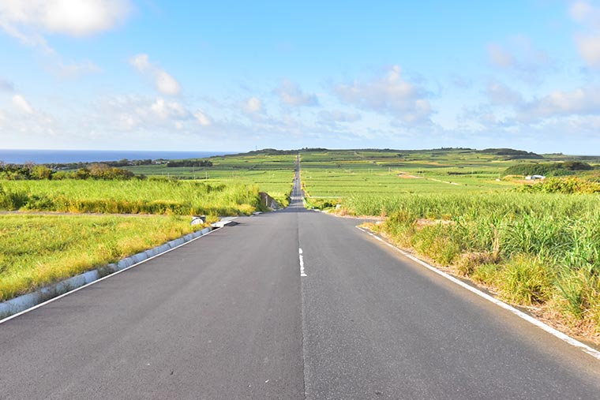
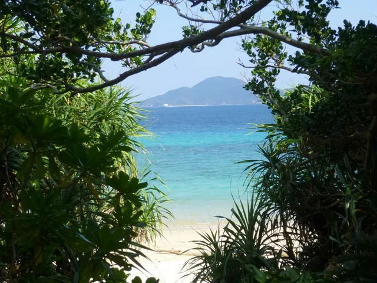
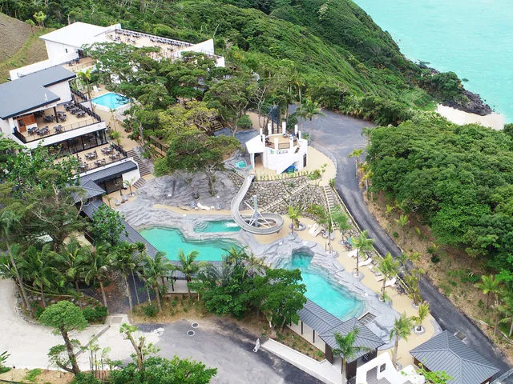
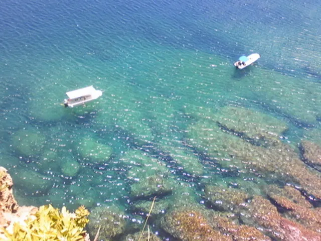
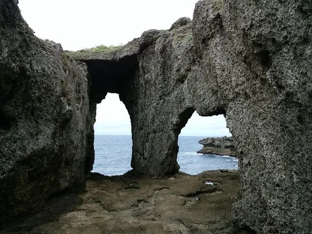
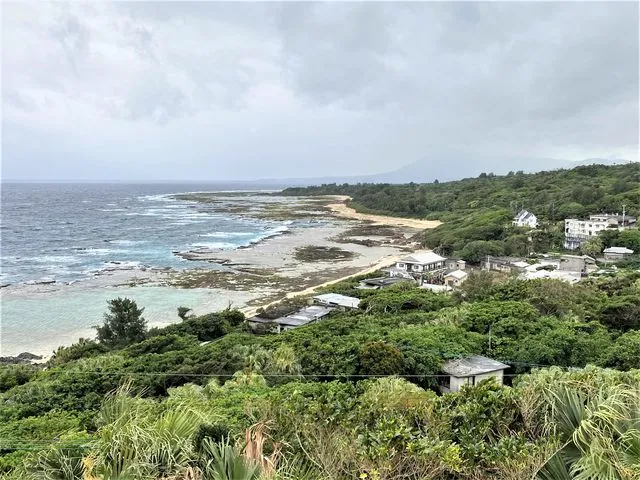
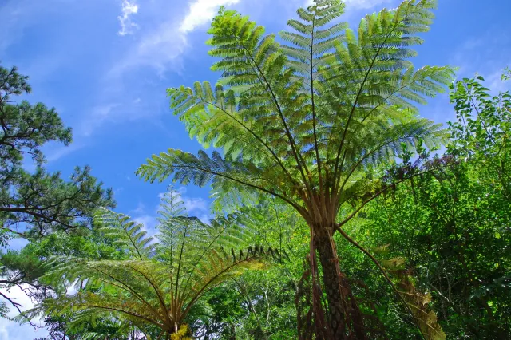
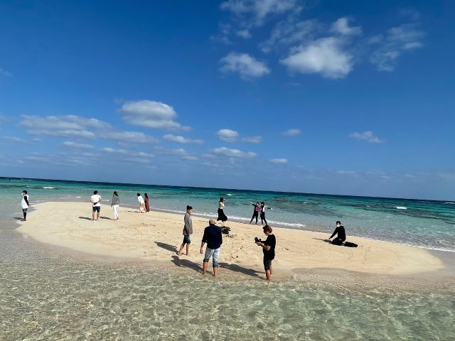
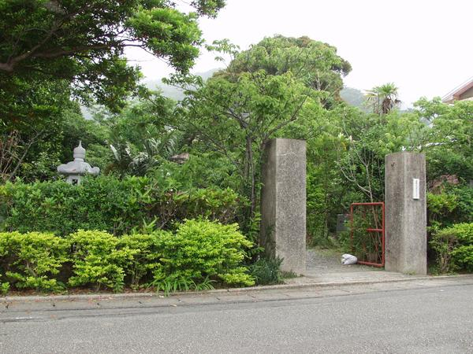
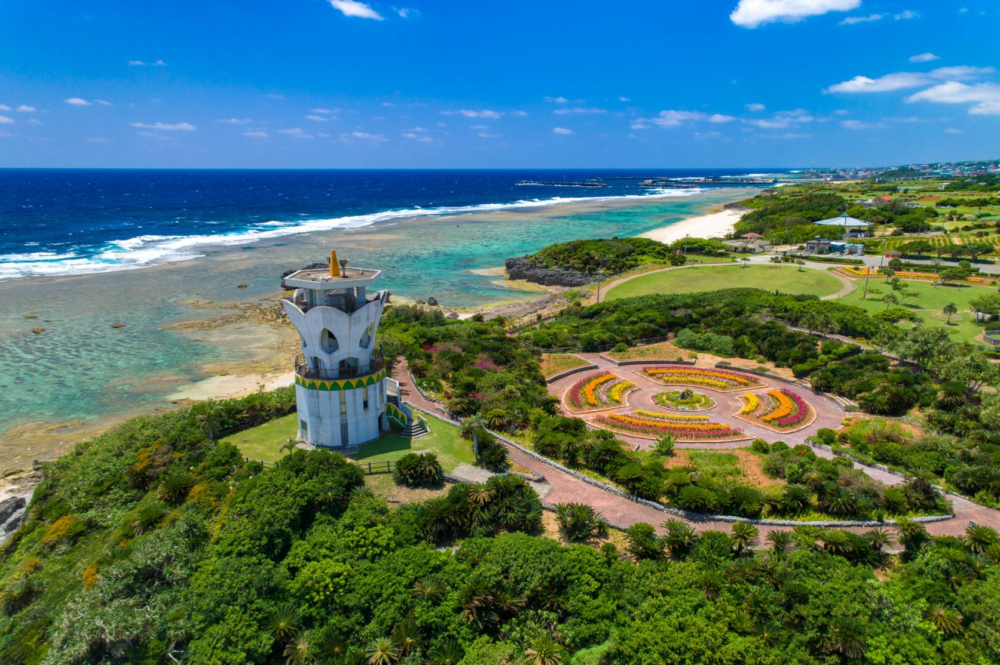
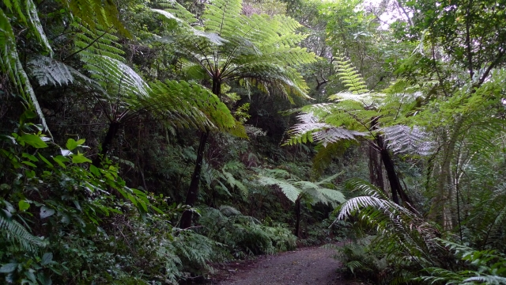

「奄美」「奄美群島」「奄美 観光」でお探しの方へ。どなたが見ても「行ってみたい」と感じる、南国・奄美の魅力をこのページに集めました。
下部のテーブルでは、これまでにない奄美群島12市町村を横断した旅行案内をご覧いただけます。気になる地域を見つけて、ぜひお気に入りの場所を訪ねてみてください。
関東地域の奄美関係者の組織「東京奄美会」の案内の一環として本ページを公開しています。活動報告や最新のお知らせは、東京奄美会公式サイトをご覧ください。
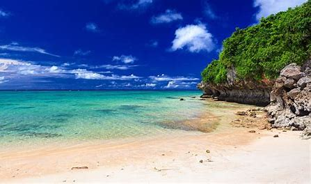
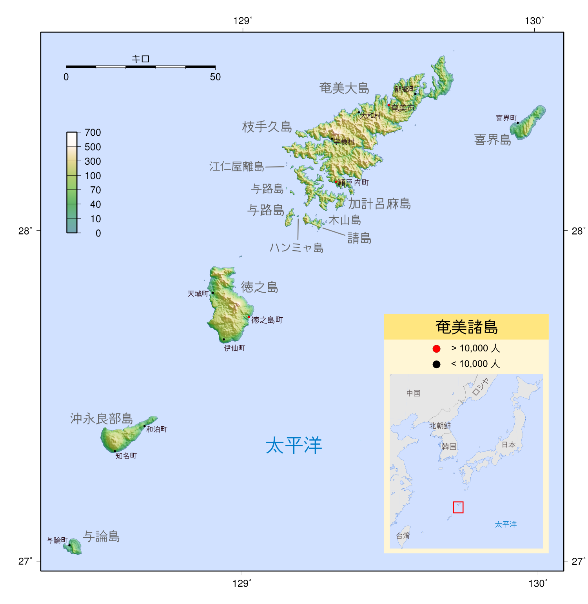













私をクリックしてね！
※ 下の表では、文字・ボタン・旗の絵など表示がある箇所をクリックすると、各サイトの情報をご覧いただけます。（下線がない項目もリンクです）
| 市町村名 | 観光 | グルメ | 特産品 | 郷土芸能 | 歴史文化 | 体験 | アクセス | 天気 | 市町村旗歌 | 基本情報 |
|---|---|---|---|---|---|---|---|---|---|---|
| 喜界町 | 観光 | グルメ | 特産品 | 郷土芸能 | 歴史文化 | 体験 | 経 路 | 天気 | Wikipedia | |
| 龍郷町 | 観光 | グルメ | 特産品 | 郷土芸能 | 歴史文化 | 体験 | 経 路 | 天気 | Wikipedia | |
| 奄美市 | 観光 | グルメ | 特産品 | 郷土芸能 | 歴史文化 | 体験 | 経 路 | 天気 | Wikipedia | |
| 大和村 | 観光 | グルメ | 特産品 | 郷土芸能 | 歴史文化 | 体験 | 経 路 | 天気 | Wikipedia | |
| 宇検村 | 観光 | グルメ | 特産品 | 郷土芸能 | 歴史文化 | 体験 | 経 路 | 天気 | Wikipedia | |
| 瀬戸内町 | 観光 | グルメ | 特産品 | 郷土芸能 | 歴史文化 | 体験 | 経 路 | 天気 | Wikipedia | |
| 徳之島町 | 観光 | グルメ | 特産品 | 郷土芸能 | 歴史文化 | 体験 | 経 路 | 天気 | Wikipedia | |
| 天城町 | 観光 | グルメ | 特産品 | 郷土芸能 | 歴史文化 | 体験 | 経 路 | 天気 | Wikipedia | |
| 伊仙町 | 観光 | グルメ | 特産品 | 郷土芸能 | 歴史文化 | 体験 | 経 路 | 天気 | Wikipedia | |
| 知名町 | 観光 | グルメ | 特産品 | 郷土芸能 | 歴史文化 | 体験 | 経 路 | 天気 | Wikipedia | |
| 和泊町 | 観光 | グルメ | 特産品 | 郷土芸能 | 歴史文化 | 体験 | 経 路 | 天気 | Wikipedia | |
| 与論町 | 観光 | グルメ | 特産品 | 郷土芸能 | 歴史文化 | 体験 | 経 路 | 天気 | Wikipedia | |
| 東京奄美会 | ♪ BGM再生 | 【S N S 一覧】 | 世界自然遺産 | ― | ||||||
SNSリンク一覧
準備中です
送信後メール画面右上のXで終了してください。